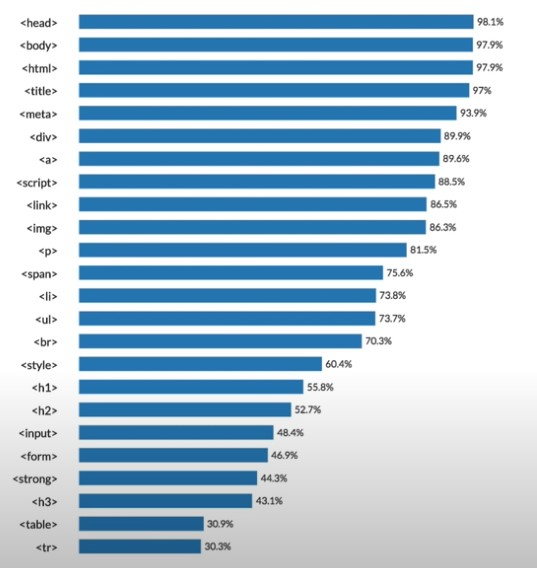

Hypertext Markup Language (HTML) HTML(Hyper Text Markup Language)은
가장 단순한 형태의 웹 언어이다.
웹 서버에 HTML 문서를 저장하고 있다가 클라이언트가 특정 HTML 페이지를 요청하면
해당 HTML 문서를 클라이언트로 전송한다. 그러면 클라이언트는
이 웹 페이지를 해석하여 웹 브라우저에 표현해 주는데
이런 웹 페이지를 정적인(Static) 웹 페이지라고 한다.
[그림 4-5] 정적인 웹 페이지 접근 시 웹 문서 전송
[그림 4-5] 정적인 웹 페이지 접근 시 웹 문서 전송
초기의 웹 서비스는 정적인 웹 페이지가 대부분이었다.
대학에서 교양 과목으로 처음 홈페이지를 만들어볼 때도 대부분 이런 정적인 웹 페이지를 만든다.
정적인 웹 페이지는 고객의 취향이나 변화에 적응할 수 없고
새로운 것을 추가하는 데 많은 시간이 걸린다는 단점이 있지만 보안에는 장점이 많다.
웹 해킹은 웹 브라우저와 웹 서버 사이에 전달되는 값들의 변조를 통해
웹 서버의 설정이나 로직을 바꾸는데,
정적인 웹 페이지는 '바꿀 수 있는 가능성'이 매우 낮기 때문이다.
[네이버 지식백과] HTML (정보 보안 개론, 2013. 6. 28., 양대일)
This is heading 1
This is heading 2
This is heading 3
This is heading 4
This is heading 5
This is heading 6
W3Schools is optimized for learning and training.
Examples might be simplified to improve reading and learning.

Tutorials, references, and examples are constantly reviewed to avoid errors,
but we cannot warrant full correctness of all content.
While using W3Schools, you agree to have read and accepted our terms of use,
cookie and privacy policy.
"Hyper Text Mark-up Language" 의 약자.
웹 페이지의 모습을 기술하기 위한 규약.
프로그래밍 언어가 아니라 마크업 언어다.
헷갈리지 않도록 하자.
웹사이트에서 흔히 볼 수 있는 htm이나 html 확장자가 바로 이 언어로 작성된 문서다.
최초 제안자는 CERN의 물리학자 티머시 J. 버너스리이다.[3]
URL, HTTP, WWW의 전신인 Enquire 등도 그가 세트로 개발하고 제안했다.
TCP/IP 통신규약을 만든 빈턴 G. 서프(Vinton Gray Cerf)와 함께 인터넷의 아버지로 불린다.
나무위키에서는 다음과 같이 내용을 집어넣어 HTML을 적용시킬 수 있지만
도움말에 의하면 지원 종료 가능성이 있는 비권장 문법이므로
나무위키에서는 HTML 태그를 사용하지 않는 것을 추천한다. HTML Tutorial